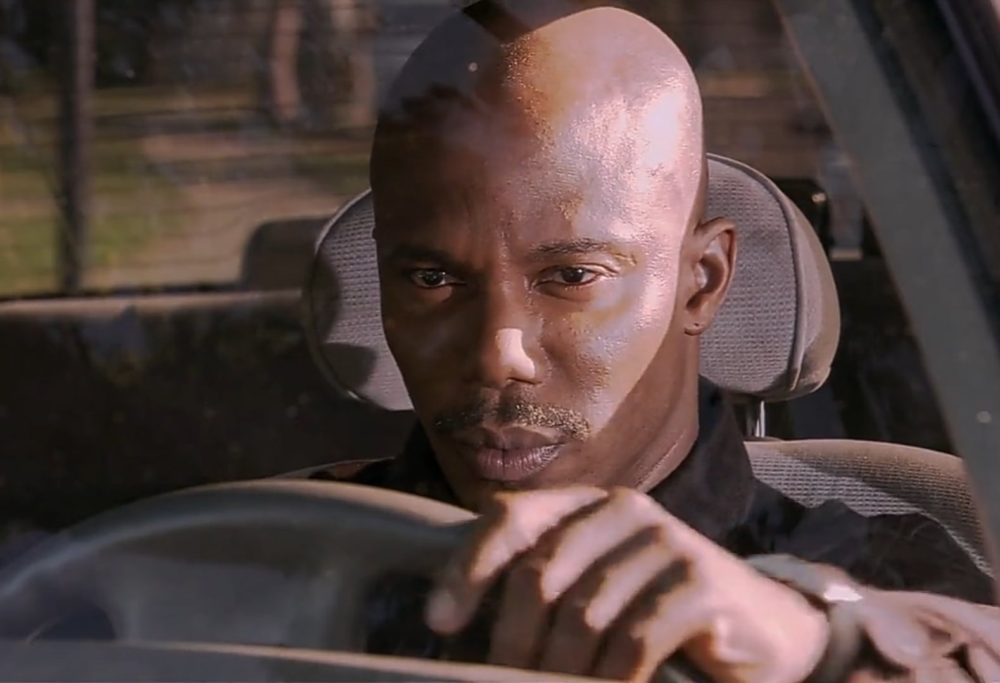
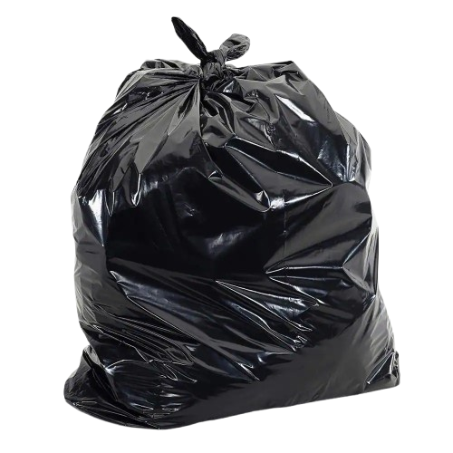
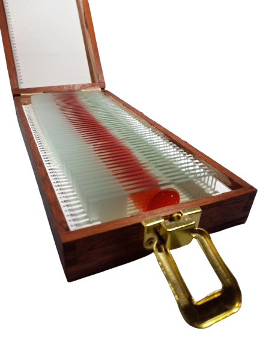

KILLER PROFILE
CRIME SCENE EVIDENCE

REPERTO A: SACCHI IMMONDIZIA
REPERTO B: SCATOLA DI VETRINILa seconda stagione sposta i riflettori su una nuova, terrificante ombra che si allunga sulle acque di Miami: il Bay Harbour Butcher. Quando i sommozzatori scoprono per caso decine di sacchi neri contenenti resti umani sul fondale oceanico, la Miami Metro PD e l'FBI si rendono conto di trovarsi di fronte a un serial killer metodico che prende di mira esclusivamente altri criminali sfuggiti alla giustizia.
A guidare la task force speciale viene chiamato l'agente speciale dell'FBI Frank Lundy. Fin dall'inizio, le indagini si concentrano su un profilo interno alla polizia: qualcuno con un addestramento militare, accesso ai file riservati e una profonda conoscenza delle tecniche forensi. Tutti gli indizi iniziano a convergere prepotentemente sul sergente James Doakes.
Doakes, ex membro delle forze speciali (Black Ops) dal temperamento aggressivo e instabile, è l'unico all'interno del dipartimento ad aver sempre nutrito un profondo, viscerale sospetto nei confronti di Dexter Morgan. Questa sua ossessione lo porta a seguire Dexter ovunque, ma finisce per trasformarsi nella sua stessa condanna. Quando Doakes scopre i vetrini con i campioni di sangue nascosti da Dexter, l'FBI si convince definitivamente che sia lui il macabro macellaio di Miami, trasformandolo nel perfetto capro espiatorio.
Dietro la facciata del brutale sergente Doakes si nasconde in realtà la firma geometrica e pulita di Dexter, costretto a fare i conti con la vulnerabilità dei suoi stessi segreti custoditi nell'oceano.
La Camera di Contenimento: Le vittime vengono immobilizzate su un tavolo interamente rivestito di plastica trasparente. Ogni spazio viene sigillato per non lasciare la minima traccia di DNA o bio-indicatori.
Il Taglio Giugulare: Prima di procedere, Dexter incide la guancia della vittima per raccogliere una singola goccia di sangue su un vetrino da microscopio, il suo personale trofeo di caccia.
Smaltimento Oceanico: I corpi vengono fatti a pezzi, chiusi in sacchi della spazzatura biodegradabili insieme a pesi di piombo, e gettati nella Corrente del Golfo a bordo della barca "Slice of Life", sperando che l'oceano cancelli ogni peccato.
A differenza della prima stagione, dove Dexter era il cacciatore, qui diventa la preda. Il Codice di Harry viene messo a dura prova dal momento che la caccia all'uomo dell'FBI stringe il cerchio attorno a lui, costringendolo a manipolare le prove del suo stesso dipartimento per far ricadere la colpa su Doakes.
La tragica conclusione nella cabina nelle paludi della Florida sigillerà il destino del sergente, lasciando intatto il segreto di Dexter ma segnando per sempre la sua coscienza con la morte di un uomo innocente.
"Tu mi fai venire i brividi, lo sai Dexter. Ti tengo d'occhio figlio di puttana! "